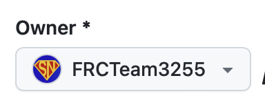
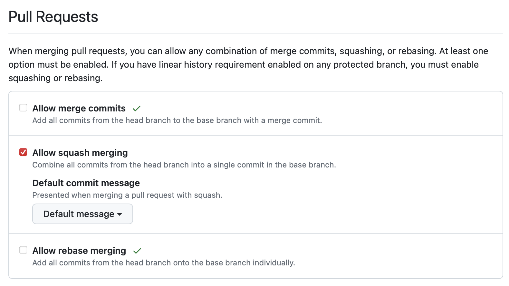
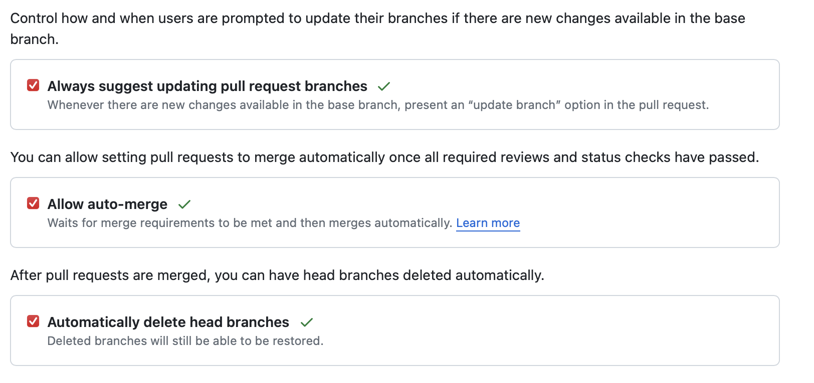
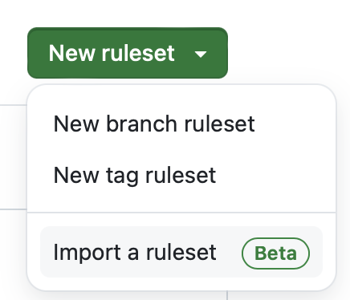

- Go to New Repository - Standard Swerve Template
- Make sure Owner is set to FRCTeam3255

- Set Repository name to the format:
YYYY_Robot_CodeorYYYY_Offbot_Codefor example2024_Robot_Codeor2024_Offbot_Code - Clone the Repo
- set merge type restriction
- Uncheck all but Allow squash merging
-

-
Set the following settings to be checked off
-

-
Go to Rules/Rulesets
- Select New Rulesets -> Import a ruleset

- Download all_branches.json
- Download protect_main.json
TODO WIP INSTRUCTIONS:
- add branch rules
- add build restriction